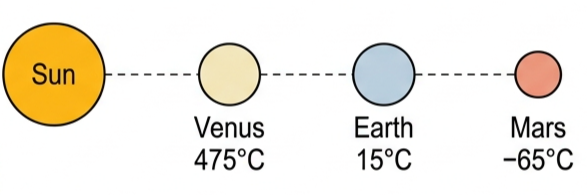
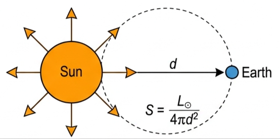
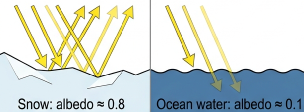
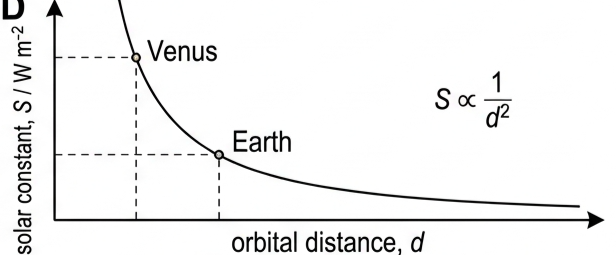
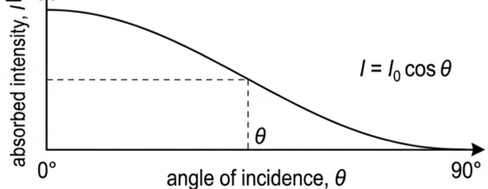
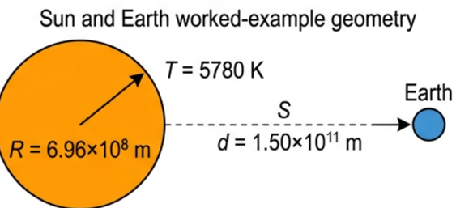
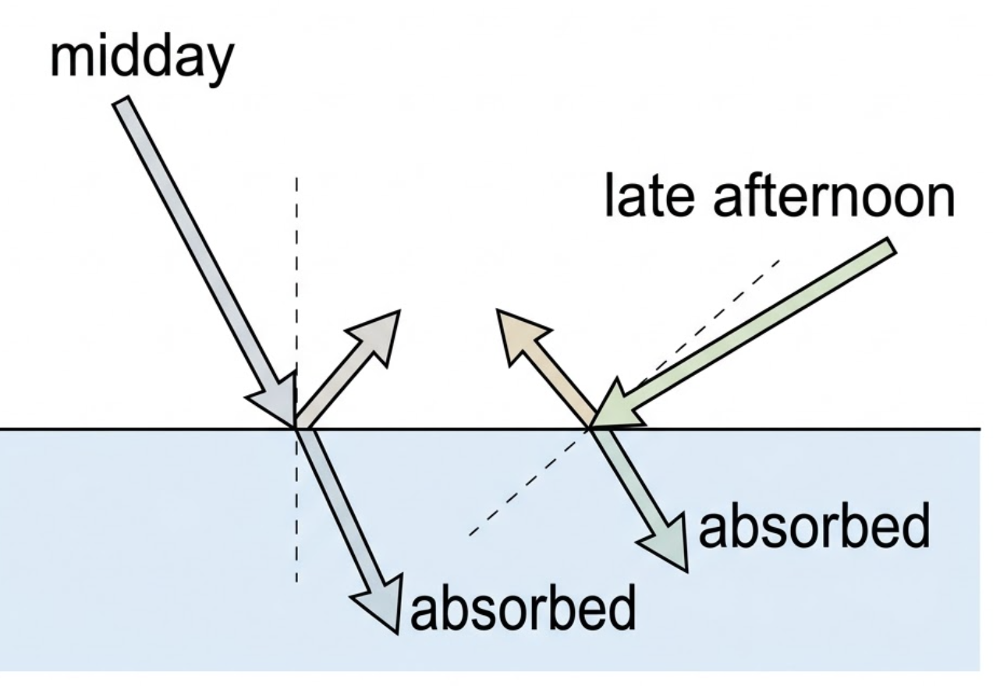

Part of B.2 Greenhouse Effect
· Unit B — IB Physics 2023
1 Lesson 1 of 4 · B.2 Greenhouse Effect
Solar Radiation and Albedo
Every planet's temperature comes down to a balance of two numbers: how much sunlight it intercepts, and how much of that it actually keeps. This lesson covers the first number — the solar constant — and the fraction a surface bounces straight back, its albedo.
🪐 Hook – the Goldilocks planet
Venus has a surface temperature of 475°C. Mars averages -65°C. Earth's average is a comfortable 15°C. What makes Earth so special? Think about distance from the Sun, atmosphere, and surface composition before reading on.

Fig 1 — Venus, Earth and Mars at increasing distance from the Sun. Temperature falls with distance, but distance alone does not explain the numbers.
💡 Diagnostic question — why isn't Mars simply "colder Earth" and Venus simply "hotter Earth"? Distance from the Sun sets a baseline, but each planet's atmosphere changes how much of the incoming energy is kept. Earth sits in the "Goldilocks zone" — the right distance — and has an atmosphere that traps enough heat without running away, unlike Venus's.
🌞 The solar constant
The Sun radiates energy in all directions. Its total power output is the luminosity, \(L_{\odot}\). By the time that energy has spread out to Earth's orbit, only a tiny fraction crosses each square metre — this is the solar constant, \(S\): the intensity of solar radiation just above Earth's atmosphere.
Solar constant, from luminosity spread over a sphere of radius d
$$S = \frac{L_{\odot}}{4\pi d^2}$$
\(L_{\odot} = 3.83\times10^{26}\) W and \(S = 1.36\times10^{3}\) W m⁻² at Earth's orbital radius, \(d = 1.50\times10^{11}\) m. The Sun's total luminosity spreads evenly over an imaginary sphere of radius \(d\); Earth's cross-section, \(\pi r^2\), only intercepts a tiny slice of that sphere's surface, \(4\pi d^2\).

Fig 2 — The Sun's luminosity spreads over a sphere of radius d. Earth intercepts only the fraction of that sphere covered by its own cross-sectional area.
📖 Not actually constant — S varies by about 0.1% over an 11-year solar cycle. This is not believed to have a significant effect on Earth's climate.
🪞 Albedo — the reflective power
Albedo is the measure of the average energy reflected or scattered off a surface:
Albedo runs from 0 (a perfect black body — absorbs everything) to 1 (a perfect reflector — scatters everything). It is a pure ratio, so it has no units.

Fig 3 — Snow (albedo ≈ 0.8) reflects most incoming radiation; ocean water (albedo ≈ 0.1) absorbs most of it.
Material
Albedo
Ocean water
0.1
Forest
0.1
Road surface
0.1
Soil
0.2
Grass
0.3
Desert sand
0.4
Clouds (very variable)
0.5
Ocean ice
0.6
Snow
0.8
🌍 Earth's average albedo is 0.315 — about 31.5% of incident solar radiation is reflected back to space, and 68.5% is absorbed.
☁️ What changes a surface's albedo
Albedo is not a fixed property of a place — it shifts with conditions:
Latitude — more ice/snow near the polesSeason — higher in winter (snow cover)Time of day — rises as the angle to the perpendicular increasesCloud cover — highly variable with type and thicknessSurface type — snow ≈ 0.8, ocean ≈ 0.1
The time-of-day effect matters most for calculations: radiation striking a surface at a steeper angle (further from perpendicular) reflects more readily, so albedo increases as the day goes on.
📈 Graphs worth recognising
Graph type
Axes (X, Y)
Shape
What to read
Solar constant vs orbital distance
Distance, d · Solar constant, S
Falls steeply then levels off — an inverse-square curve
\(S \propto 1/d^2\); closer planets (Venus) sit higher up the curve than farther ones (Mars)
Absorbed intensity vs angle of incidence
Angle, θ (0°–90°) · Absorbed intensity, I
Maximum at θ = 0°, falling smoothly to zero at θ = 90°
\(I = I_0\cos\theta\); explains why midday (small θ) absorbs more than late afternoon (large θ)

Fig 4 — S falls off as the inverse square of orbital distance. Venus, closer in, sits on the steep upper part of the curve.

Fig 5 — Absorbed intensity falls off as cos θ. This is why the Sun feels weaker as it approaches the horizon.
✍️ Worked example 1 – deriving the solar constant
The Sun has surface temperature \(T = 5780\) K and radius \(R = 6.96\times10^{8}\) m. Earth orbits at \(d = 1.50\times10^{11}\) m. Take \(\sigma = 5.67\times10^{-8}\) W m⁻²K⁻⁴. Find the Sun's luminosity and the solar constant at Earth's orbit.
1
Identify: the Sun radiates as a black body, so its luminosity comes from Stefan-Boltzmann, \(L_{\odot} = \sigma A T^4\). Spreading that luminosity over a sphere of radius \(d\) gives the solar constant, \(S = L_{\odot}/(4\pi d^2)\).
2
Data: \(T = 5780\) K, \(R = 6.96\times10^{8}\) m, surface area \(A = 4\pi R^2 = 6.05\times10^{18}\ \text{m}^2\), \(\sigma = 5.67\times10^{-8}\ \text{W m}^{-2}\text{K}^{-4}\), \(d = 1.50\times10^{11}\) m.
3
Equation: \(L_{\odot} = \sigma A T^4\) \(= (5.67\times10^{-8})(6.05\times10^{18})(5780)^4\) then \(S = L_{\odot}/(4\pi d^2)\).
4
Answer: \(L_{\odot} = 3.83\times10^{26}\ \text{W}\). \(S = (3.83\times10^{26})/(4\pi(1.50\times10^{11})^2)\) \(= 1.35\times10^{3}\ \text{W m}^{-2}\), consistent with the accepted value of \(1.36\times10^{3}\) W m⁻².

Fig 6 — The two-step route: Stefan-Boltzmann gives the Sun's total output, then the inverse-square spread gives the intensity at Earth's distance.
✍️ Worked example 2 – a lake at midday (B2.1)
Radiation of intensity 610 W m⁻² was incident perpendicularly on the surface of a lake at midday. (a) If the water had an albedo of 0.18, calculate how much energy was absorbed every second by each square metre. (b) Describe how your answer would change much later in the day.
Data: incident intensity = 610 W m⁻², albedo = 0.18.
3
Equation: \(610 \times (1.0 - 0.18)\)
4
Answer (a): 500 W m⁻² absorbed (110 W reflected). (b) Later in the day, radiation strikes at a greater angle to the perpendicular. Albedo increases (more reflection), and the incident intensity itself decreases because the radiation passes through a greater length of atmosphere. The absorbed energy decreases for both reasons.

Fig 7 — Midday radiation strikes close to perpendicular (low albedo, high absorption); late-afternoon radiation strikes at a shallow angle (higher albedo, lower absorption).
🔆 Real-world: sizing a solar panel
Photovoltaic panels are designed to keep albedo as low as possible: an anti-reflective coating and a dark surface minimise reflection, so more incident radiation is absorbed and converted. Mounting the panel perpendicular to the incoming radiation does two things at once — it maximises the intensity landing on each square metre, and it minimises the albedo (reflection is lowest at perpendicular incidence).
✓ Examiner tip: "absorbed power = incident power × (1 − albedo)" is the one line that answers most albedo questions on solar panels, walls or lakes. State it explicitly before substituting numbers.
🚀 HL extension – solar constants across the solar system
The same equation, \(S = L_{\odot}/(4\pi d^2)\), applies at any orbital radius. Venus, at \(d = 1.08\times10^{11}\) m, has \(S = 2.60\times10^{3}\) W m⁻² — nearly double Earth's — which is one reason (before its runaway greenhouse effect is even considered) that Venus runs so hot.
Challenge: Mercury orbits at \(d = 5.79\times10^{10}\) m. By what factor does its solar constant exceed Earth's? Answer: \(S \propto 1/d^2\), so the factor is \((1.50\times10^{11}/5.79\times10^{10})^2 \approx 6.7\times\) Earth's solar constant.
⚠️ Trap corner – common mistakes
Misconception
Correct view
"Solar constant" means it never changes
It varies by about 0.1% over the 11-year solar cycle — small enough to have no significant effect on climate
The solar constant is the Sun's total power output
That is luminosity, \(L_{\odot}\). The solar constant, \(S\), is the intensity at one specific distance (Earth's orbit)
A bright, light-coloured surface has low albedo
The opposite: bright surfaces like snow reflect most incident light, giving them high albedo (≈0.8)
Higher albedo means a surface absorbs more energy
Higher albedo means more radiation is reflected, so less is absorbed — absorbed = incident × (1 − albedo)
⚠️ Most common slip: using the full sphere \(4\pi d^2\) instead of the Earth's cross-sectional area \(\pi r^2\) when working out how much power a planet intercepts, or forgetting the \((1-\text{albedo})\) factor altogether.
C the intensity of solar radiation just above Earth's atmosphere
D the intensity of radiation at the Sun's surface
2. Venus orbits closer to the Sun than Earth. Compared with Earth's solar constant, Venus's is
A smaller, since Venus is smaller than Earth
B larger, since S ∝ 1/d² and Venus's d is smaller
C the same, since both orbit the same Sun
D larger, since Venus has a higher albedo
3. A surface with an albedo of 0 is
A a perfect reflector
B a perfect black body — absorbs everything
C transparent to radiation
D impossible — albedo cannot be zero
4. Using Table B2.1, which surface reflects the largest fraction of incident radiation?
A Ocean water
B Desert sand
C Ocean ice
D Snow
5. As the Sun gets lower in the sky in the late afternoon, the albedo of a lake surface
A increases, because radiation strikes at a greater angle to the perpendicular
B decreases, because less radiation is arriving overall
C stays the same — albedo depends only on material
D becomes exactly 1
Practice check — fill in the blanks
Complete the statements:
The Sun's total power output is its . Spreading this over a sphere of radius d gives the solar constant, which follows an -square law with distance. is the ratio of scattered power to incident power, and runs from 0 to . Earth's average albedo is approximately . The energy a surface absorbs equals the incident intensity multiplied by (1 − ). As the angle of incidence increases, albedo .
Exam‑style questions
Exam question · Calculate / Determine / Describe / State
Q1. Photovoltaic solar panels of dimensions 1.86 m × 2.12 m have 580 W of thermal radiation incident perpendicularly on them. (a) Calculate the intensity of the radiation. (b) If the surface of the panels has an albedo of 0.21, determine the total rate at which the panels absorb thermal radiation. (c) Describe how the albedo of the panels is minimised. (d) State two reasons why it is best if the panels are perpendicular to the incident radiation. [6 marks]
✓ (a) Area = 1.86 × 2.12 = 3.94 m²; \(I = 580/3.94 = 147\) W m⁻². ✓ (b) Absorbed power = incident power × (1 − albedo) = 580 × (1 − 0.21) = 458 W. ✓ (c) Panels are treated with an anti-reflective coating and have a dark surface to minimise reflection. ✓ (d) Perpendicular incidence maximises the intensity landing on each square metre. ✓ It also minimises the albedo, since reflection is lowest at perpendicular incidence.
Exam question · Calculate / Compare
Q2. Venus orbits the Sun at a distance of \(1.08\times10^{11}\) m. Using \(L_{\odot} = 3.83\times10^{26}\) W, calculate Venus's solar constant and compare it with Earth's. [3 marks]
✓ \(S = L_{\odot}/(4\pi d^2) = (3.83\times10^{26})/(4\pi(1.08\times10^{11})^2)\). ✓ \(S = 2.60\times10^{3}\ \text{W m}^{-2}\). ✓ This is nearly double Earth's solar constant (\(1.36\times10^{3}\) W m⁻²), consistent with Venus's much higher surface temperature.
Exam question · Calculate / Discuss
Q3. Mars orbits the Sun at a distance of \(2.28\times10^{11}\) m. Show that its solar constant is approximately 590 W m⁻², and discuss what this suggests about Mars's average temperature relative to Earth's. [4 marks]
✓ \(S = L_{\odot}/(4\pi d^2) = (3.83\times10^{26})/(4\pi(2.28\times10^{11})^2) \approx 590\ \text{W m}^{-2}\). ✓ This is much less than Earth's 1.36×10³ W m⁻², so Mars intercepts far less energy per square metre. ✓ A lower solar constant alone points to a colder average temperature, consistent with Mars's actual average of about −65°C. ✓ The full picture also needs Mars's albedo and its (much thinner) atmosphere — covered in the next lesson's energy balance model.
Exam question · Explain
Q4. Table B2.1 gives ocean water an albedo of 0.1 and ocean ice an albedo of 0.6, even though both are made of the same substance. Explain this difference. [3 marks]
✓ Albedo depends on how a surface interacts with light, not just its chemical composition. ✓ Liquid water is dark and largely transmits or absorbs incoming radiation rather than reflecting it, giving a low albedo. ✓ Ice is a bright, crystalline solid surface that scatters incoming light efficiently in many directions, giving a much higher albedo.